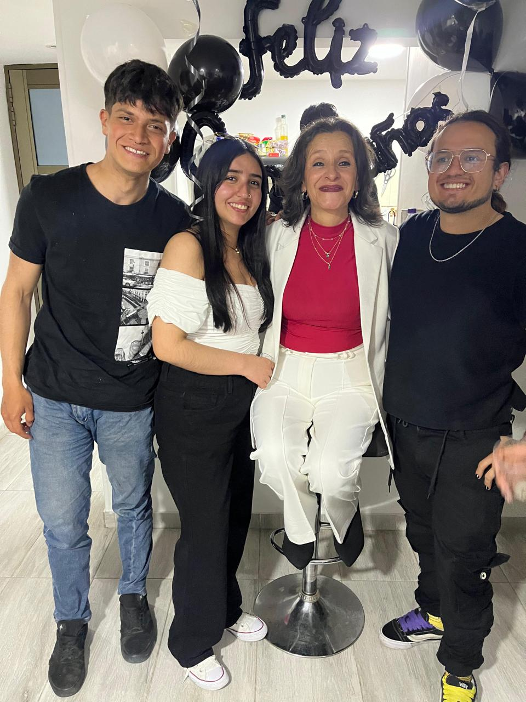
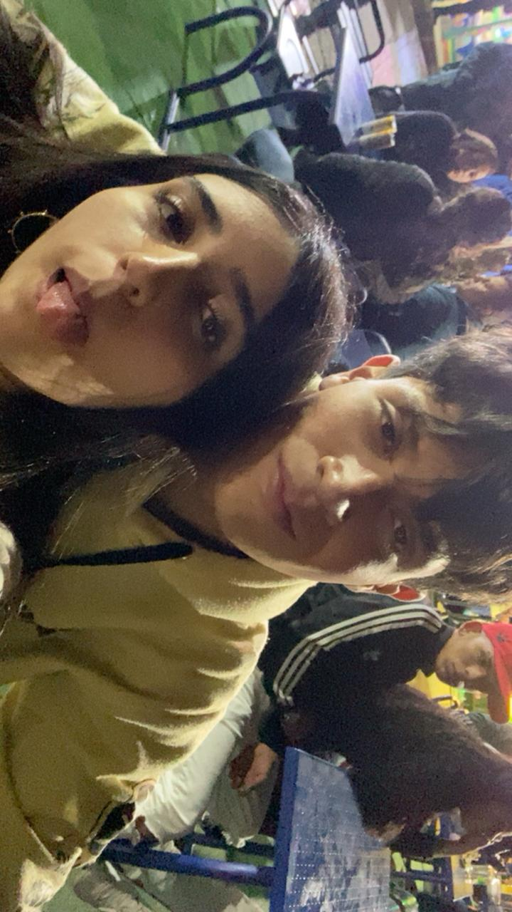
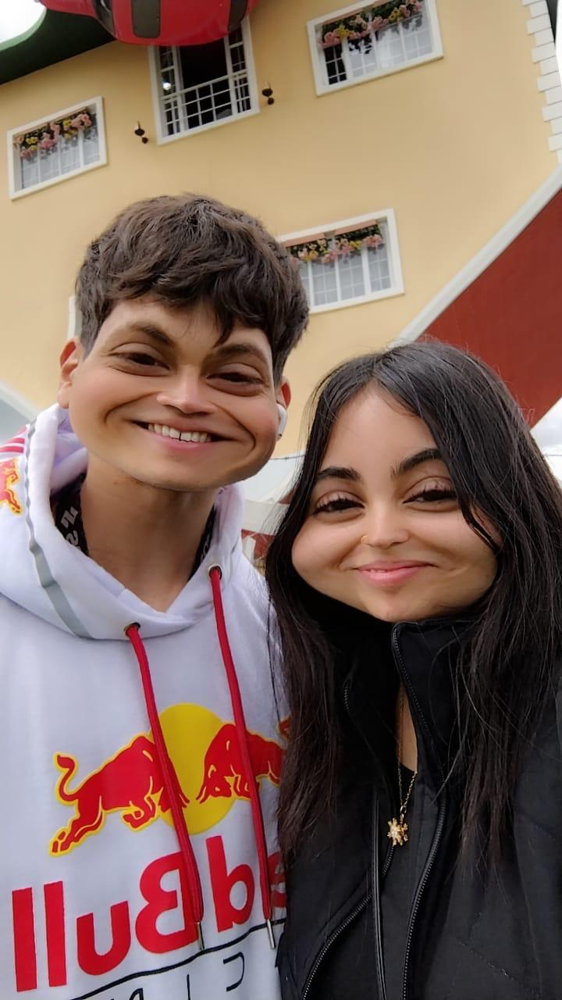

N U E S T R A 💝 N O C H E
15
Febrero
🕕 6:00 PM
🏡 Te recojo
🎁 Sorpresa especial
28 septiembre 2024
Como cuando un Terranova elige a su compañero de vida
19 Octubre 2024
En el mirador de la cueba del arco, igual que un Terranova conquistando nuevas alturas
¡El comienzo de nuestras grandes aventuras! 26 Octubre 2024
Nuestro picnic donde las palabras fluyeron como el pelaje al viento de un Terranova...
"¿Seremos algo más?"
2 Noviembre 2024
Dos vampiros, un mismo latido. Como Terranovas en manada, demostramos que hasta en la oscuridad...
¡brilla nuestro equipo!
3 Noviembre 2024
Flotando sobre Bogotá con la curiosidad de un Terranova que descubre un nuevo juguete.
¿Sabías que tu risa era mi cable de seguridad?
24 Noviembre 2024
Donde el agua reflejó nuestro "sí", firme como las patas palmeadas de un Terranova abrazando su destino.
¡El día que dejamos de ser cachorros solitarios! 20 Diciembre 2024
Luces que brillaron como tu pijama de algodón...
¡Tan suave como el manto de un Terranova y tan cálida como su abrazo!
10 Enero 2025
Cuando me mostraste esa pijama tan suave...
¡Sentí que estaba abrazando a un cachorro Terranova recién peinado!
"¿Eres real o un sueño de peluche?"
13 Enero 2025
Rugimos como Terranovas defendiendo su territorio...
Pero hasta en los gruñidos más fuertes, supimos encontrar el camino de regreso al calor de la madriguera.
18 Enero 2025
En el Mirador, tu sonrisa fue mi casco...
y esta moto, nuestro territorio marcado. ¿Lista para proteger nuestra manada?
26 Enero 2025
Hasta las estatuas sintieron nuestro juego. ¡Un Terranova jamás se resiste a una buena broma...
ni a su humano cómplice!
2 Febrero 2025
Madrugamos como Terranovas ansiosos por jugar...
Desayuno, parque y tu mano en la mía. ¿Sabes qué es perfecto? Esto.

Como los Terranova, mi compromiso contigo es inquebrantable
Tu seguridad es mi prioridad, como un Terranova guardián
Un amor tan grande como el corazón de un Terranova

Juntos en cada aventura, como Terranovas explorando el mundo
Esperaré lo que sea necesario, como su noble espera junto al mar
Sentiré tus tempestades antes que lleguen, como su instinto salvavidas
Jugaremos como cachorros Terranova en nieve fresca
Deposita en mí tu peso, como niño sobre lomo Terranova
Enfrentaré cualquier tormenta por ti, como nadando contra corriente
Amor que flota como su pelaje en el lago
Oiré hasta tus silencios, como ellos detectan peligros lejanos
Navegaré contigo en aguas calmadas o bravas
Descubriremos juntos cada secreto, como su olfato en nuevos senderos
Mis besos curarán tus heridas, como su lamido a cachorros lastimados
Construiremos un refugio con la calidez de su pelaje invernal
Nos rescatamos mutuamente, como Terranovas en aguas turbulentas
🕕 6:00 PM
🏡 Te recojo
🎁 Sorpresa especial